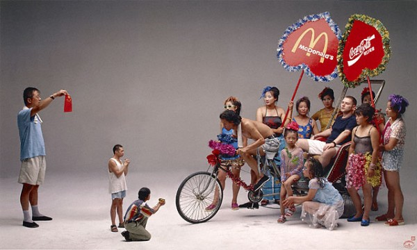
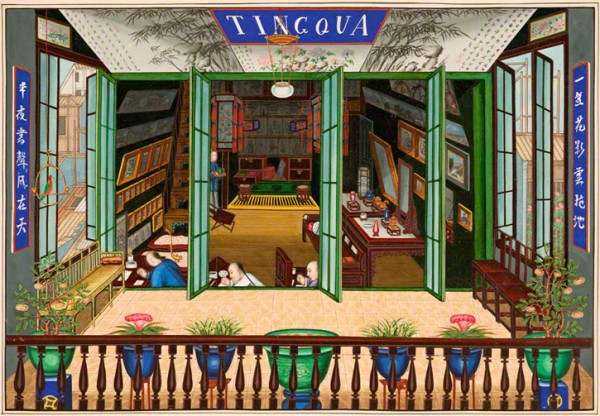
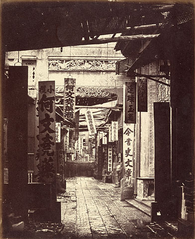
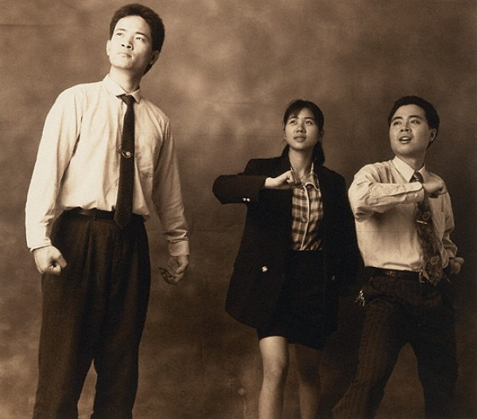
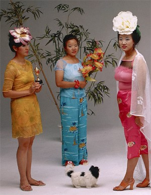

-
East by Southwest: Three Views of China
by Sam Biederman March 7, 2011
To the United States, China is a threat and a friend, a customer and a creditor, an inspiration and a cautionary tale. Just as the young Soviet Union was in the 1920’s, or Japan was in the 80’s, the People’s Republic of China is the obsessive focus of America’s dreams and nightmares of profit and collapse. But forty years after China opened to the West, the nation is still a bit of a mystery to us. And if what it means to be Chinese now can be confusing, anything before the Great Leap Forward often seems downright unknowable.
Three related photography exhibitions currently up at the Getty in Los Angeles attempt to fill this gap by depicting key moments in Chinese history, with a particular focus on crucial moments of interaction with the west. “Brush and Shutter: Early Photography from China,” “Felice Beato: A Photographer on the Eastern Road,” and “Photography from the New China,” present pictures from the arrival of the first daguerrotypes in China to the current period of economic dynamism. This trio walks a fine line between exploring orientalism and just being orientalist.
“Brush and Shutter” is a small show, perhaps because there was precious little photography in early China. Although there are a few interesting pieces here, the exhibit suffers from a muddled curatorial vision. Comprised mostly of portraits, posed group shots, and cityscapes, the show, while interesting from a historical perspective, is repetitive. One 1860 panoramic triptych of Shanghai’s waterfront could be a nice place-setting—but I didn’t know what I was supposed to think when presented with an entire wall of them.
Where repetition isn’t a problem, obscure and unexplained curatorial choices are. Why, for instance, is the charming, meticulous watercolor Signing the Peace Treaty at Hai Kwang Monastery next to Hing Qua John and Co.’s photograph, Theatrical Troupe? Is it because they are both documentary pieces? Because they represent a similar moment in Chinese history? Because they’re group images? Or just because they’re the same size?

Arranged in rough chronological order, the exhibition’s centerpiece is a section displaying the work of Chinese-operated photo studios. The show’s wall text asserts that, “Chinese photographic studios offered their own style of photographic representation, ranging from traditional Chinese settings to painted landscape backdrops.” But the images shown here, or in any other section of the exhibition, fail to back this up. Just steps away, there was a wall of images created by European photographers that placed a Chinese figure against a traditional backdrop; the posing, the dress, the composition, are all largely indistinguishable from Chinese photographers’ images.
China’s notable addition to the field—the use of traditional Chinese painting methods to color photographs—is touched on by “Brush and Shutter,” but only lightly. A handful of Chinese colored photos are on display, and they’re eye-catching and odd—just a little different from Western painted photos, but different enough in the quality and application of the color to suggest that there was a uniquely Chinese approach to photography. That only a small group of these photos should be on display in an exhibition whose title refers to the union of paintbrush and camera shutter is indicative of this small show’s big problems: its overambitious, undersized, and not fully formed. A documentary of the dawn of China’s modern age demands better.
Perhaps that’s why, just down the hall the Getty has placed two additional, China-focused exhibits. Although, that’s not quite accurate: “Felice Beato: A Photographer on the Eastern Road,” broadens its scope to include, um, the Orient. Presenting the work of the prolific Italian-British photographer, the Beato show covers his work in India, China, Korea, and Japan. It’s an expansive show, and perhaps Beato deserves the star treatment. At the very least his work is a compelling collection of period pieces that explore the nineteenth century trope of the mysterious and stoic east without quite challenging it. In Treasury Street, Canton , two blurred figures dart into doorways at middle-distance, breathing the ghost of life into a narrow alleyway. In Woman in Winter Dress, a Japanese woman in a kimono struggles through fake snow against a canvas backdrop of a chilly scene: a tableau from a Japanese print recreated in a photography studio’s “real life.”
But “Felice Beato’s” real problem isn’t its content, but its placement. The show is sandwiched by the early and contemporary Chinese photography exhibitions, and indeed shares a wall with the latter. Clearly the curators seek to link Beato’s work with his influences and successors. That’s fine—but they’d have been wise to exclude his work in Thailand, Japan, Korea, and India, the collective presence of which creates a pan-Asian scope that seems out of place. It doesn’t help matters that “Photographers from the New China” shares a wall not with Beato’s Chinese photos, which would make sense, but with his Indian ones, too. The enormous scope of China would seem enough for one exhibition.
The transition from the sepia-toned Beato images to the ecstatically hued “Photography from the New China” is jarring in the best way. The final show is as bold and exciting as “Brush and Shudder” and “Felice Beato” are murky and confusing. As if refuting the Western-authored images in the previous two exhibitions, “Photography from the New China” presents a nation deeply ambivalent about its growing commercial might and frank about its own failures to live up to its highest principles.
Wang Qingsong’s New Women (2000) poses five women in yellow, blue, red, and pink satin pajamas—plays on traditional Chinese dress—arranging them so they tower over a tiny man curled up next to a tiger. The women, who stare out from the frame, are a witty, trippy re-imagining of the notion of Chinese women as fetish objects. Similarly satirical is Qiu Zhije’s series Standard Pose, which poses men and women in modern business dress in the absurd, heroic poses of Maoist propaganda.
Other images are slyer. East Village, Beijing, No. 8 (1-4) by Rong Roy is a fascinating exploration of the emotional acrobatics that an un-free society demands of its citizens. In this series, the artist peaks an eye through a metal vent, then an ear, then his lips. In the final photo, he licks the side of the opening. The piece pushes towards the very limits of government-sanctioned expression—and then it licks it, taunting its seriousness, while at the same time finding sensuality and art in oppression itself. Huang Yan’s Chinese Landscape—Tattoo also sensualizes Communist China’s volatile mixture of culture and state. Two photos depict a traditional Chinese landscape painted onto Yan’s naked torso. The landscape has cracked and peeled in places, an ideal vision worn away by experience, yet still present.
Compared with the two preceding exhibitions this is an enormously diverse collection, but these pieces all share a bracing forthrightness. Unlike Beato’s oriental fantasies or the early Chinese images, the contemporary pieces are neither coy nor mysterious: they plainly state complicated truths.
The China of “Photography from the New China” is a vastly different place than the nation depicted in the images of Beato and his contemporaries. It’s a bona fide superpower, and not the hazy, benighted backwater imagined by nineteenth-century Europeans. What’s missing here—its space taken instead by the long and unenlightening Beato collection—are images from China’s period of transformation. (There must have been photographers working in China during the twentieth century, right?)
But in their collective successes and flaws, the Getty’s trio of China shows offer a terrific reminder of a simple but important fact about understanding other societies: a culture is most eloquently depicted in its native language. Just as you’re the only one who can really understand what’s wrong with your parents, the Chinese are most adept at criticizing, and celebrating, the People’s Republic.